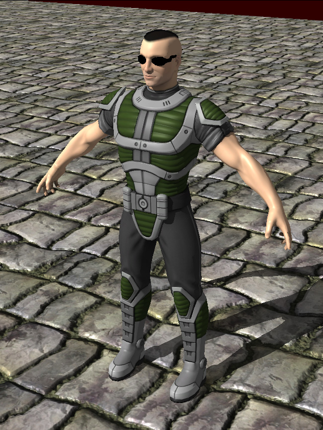
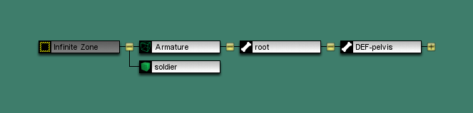

I got him all rigged and set up for animation. As you can see, I can export him from Blender properly, and import him into C4. Now I'm trying to import animation for him. I've been unsuccessful so far, and I've looked all over for the solution, before finally posting here.
First off, is there a particular way the model's hierarchy needs to be set up? I'm using a standard Blender armature, with a root bone at the base of his spine. When imported, the initial display in the scene graph is as follows:

I have an IK rig set up in Blender, but everything is neat and orderly, and only the deformation bones get exported. Assuming my current setup is acceptable, I'm not sure how to export the animation. I created a simple walk animation as a test, named it in the Action Editor in Blender, and I've tried exporting it using both the built-in COLLADA exporter, as well as Jack's (now-discontinued) plugin. Whenever I go to import the animation, absolutely nothing happens.
I think I'm pretty much on the right track, but I just need someone to help fill in the blanks. Any assistance with this would be appreciated. Thanks!